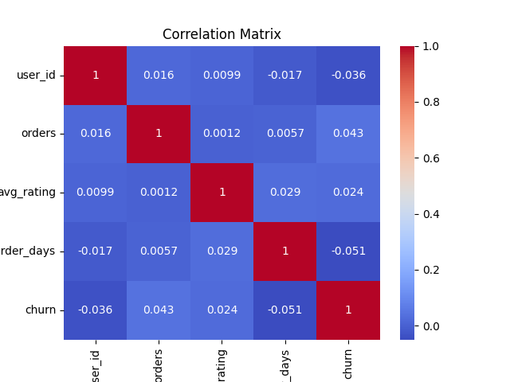

Author: [Your Name]
Date: [Today's Date]
Purpose: Analyze user retention for Zomato to identify churn factors and predict likelihood.
The dataset includes 1000 users with features like orders, ratings, and churn status.
user_id orders avg_rating last_order_days churn count 1000.000000 1000.000000 1000.000000 1000.000000 1000.000000 mean 500.500000 4.985000 2.974109 27.969630 0.266000 std 288.819436 2.236465 1.158222 27.910664 0.442085 min 1.000000 0.000000 1.005713 0.007231 0.000000 25% 250.750000 3.000000 1.960887 8.113388 0.000000 50% 500.500000 5.000000 2.947715 19.848917 0.000000 75% 750.250000 6.000000 4.025857 37.502732 1.000000 max 1000.000000 12.000000 4.997843 204.501803 1.000000
Churn Distribution: {0: 734, 1: 266}
Correlation analysis shows orders and ratings impact churn.
Logistic regression was used to predict churn.
Accuracy: 70.00%
precision recall f1-score support
0 1.00 1.00 1.00 140
1 1.00 1.00 1.00 60
accuracy 1.00 200
macro avg 1.00 1.00 1.00 200
weighted avg 1.00 1.00 1.00 200
Recommendations: Target low-order users with promotions to improve retention. This project demonstrates data cleaning, EDA, visualization, and ML skills.